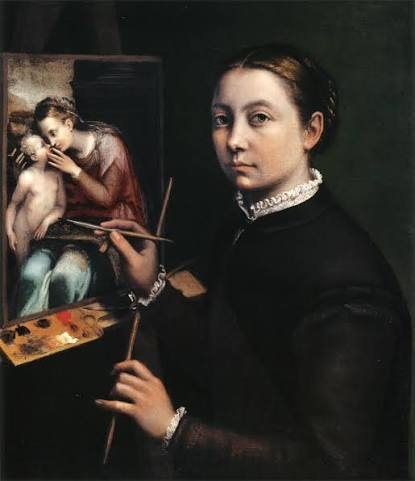
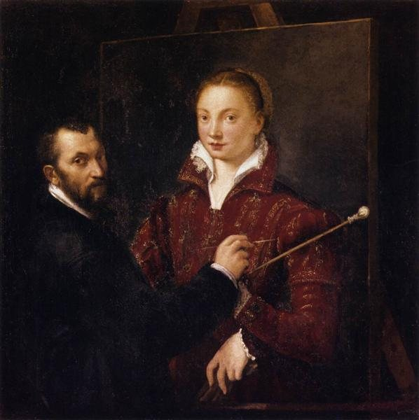
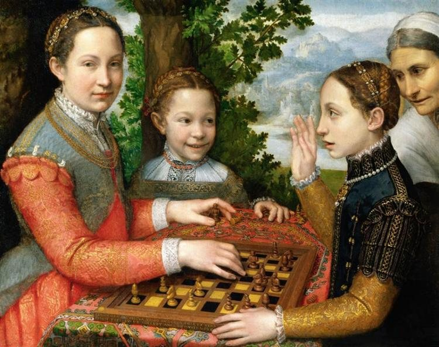
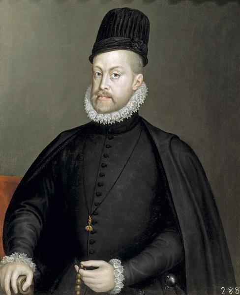
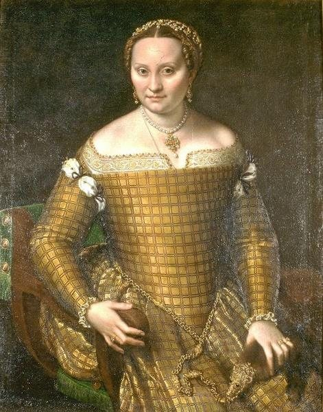

Sofonisba Anguissola
É notório o declínio da atuação das mulheres na sociedade durante o Renascimento, uma vez que a Legislação Romana provocou um recuo significativo no espaço participativo que as mesmas tinham na esfera pública. Vistas como "desqualificadas" para atuar na vida intelectual, Sofonisba opõe-se a essa conjuntura renascentista onde a mulher era excluída e relativizada e consegue desenvolver sua atividade artística para o campo profissional.

Biografia
1532 – 1625
Anguissola nasceu no seio de uma família nobre, mas relativamente pobre. Ela recebeu uma educação boa e completa, que incluiu as belas artes, a sua aprendizagem com pintores locais estabeleceu um precedente para que as mulheres pudessem ser aceitas como estudantes de arte. Enquanto jovem mulher, Anguissola viajou para Roma, onde foi apresentada a Michelangelo, que imediatamente reconheceu o seu talento, e para Milão, onde pintou o Duque de Alba e Isabel de Valois, mulher de Filipe II de Espanha, que era pintora amadora.
Até 1559, ainda jovem e vivendo na Itália, ela produziu majoritariamente autorretratos e cenas familiares, identificando-se em várias inscrições como "filha de Amilcare" e enfatizando sua condição de virgem. Esses marcadores reforçam não apenas valores socialmente desejáveis para a época, mas também indicam como a própria artista mobilizava elementos da feminilidade — virtude, recato, lealdade familiar — de forma consciente e sofisticada, compondo um imaginário feminino idealizado que permeia grande parte de sua obra inicial.
O historiador de arte Giorgio Vasari descreveu Sofonisba Anguissola como alguém que "mostrou maior dedicação e graça do que qualquer outra mulher do nosso tempo nas suas ambições em desenho; portanto ela não só conseguiu isso no desenho, como também na coloração e pintura da natureza, e como na cópia excelentemente de outros artistas, mas também porque ela mesma criou pinturas raras e muito bonitas".
Suas obras




Referência bibliográfica:
BBC NEWS. Sofonisba Anguissola, a pintora renascentista admirada por Michelangelo e 'ofuscada' na História, [s. d.]. Disponível em: bbc.com/portuguese/articles/cq5yq252nzvo.
SOFONISBA ANGUISSOLA. Sofonisba Anguissola, [s. d.]. Disponível em: wikiart.org/pt/sofonisba-anguissola.